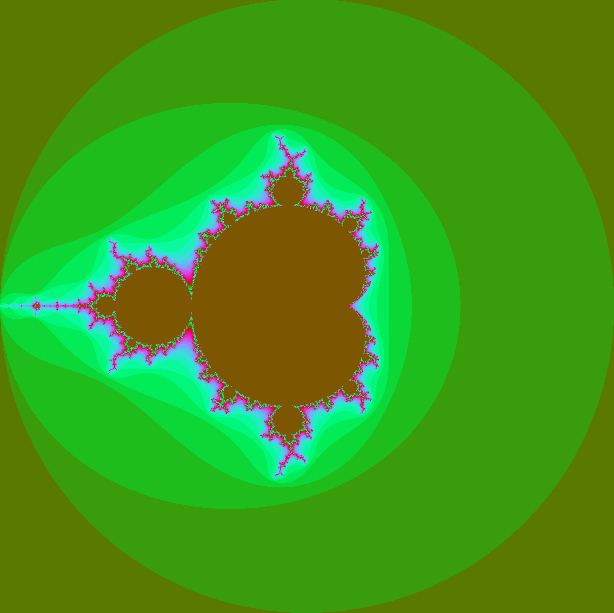

Thus far I have been using 8-bit values for the red, the green and the blue values. I write these to a file after writing the BMP header info. The method for this is simple enough but it took a little playing to understand what each parameter represents. I have set out my header according the microsoft page. It looks a bit like this:
I have used 'size' instead of height or width because there is slightly more simplicity dealing with square images when iterating through pixels. So 3 bytes per pixel, not a lot really? Well I can set my image to any size I like and easily generate files big enough to get me kicked off my codespace. One area of exploration may be to look into compression, this could also serve as our edge detection function too. One possible option is the fast fourier transform(FFT) algorithm. If we use a library suited to complex numbers this would be quite simple, we could find areas of relative intensity in the image and compress our image at the same time. This algorithm performs particulary well with natural looking images to which I'm not sure these visualisations are a subset. Another option is to index our colours as we are only using a limited range of them we do not need to store the colour values for every pixel, just the index. We would however need to recompile the images to use them, I have not learned how to do this in a web browser.
Another area worth exploring is the idea of traversing the m-set manually. Using a web browser it would be possible to create an image map, a set of links in different locations over an image and then use these to calculate new offset values. It should be possible to have code perform similarly within the web browser that will generate new images on request. Even without overcoming the accuracy issue this could be quite fun.
It may work something like this, try clicking different regions:
I am also interested in how well a neural network could predict mandelbrot values given a set of coordinates. It would be easy to generate the required training and testing data but in my estimation this solution may prove a more computationally intensive way of achieving the same result. If an image could be generated without requiring long coordinate values at any specified zoom and location, this would be ideal.